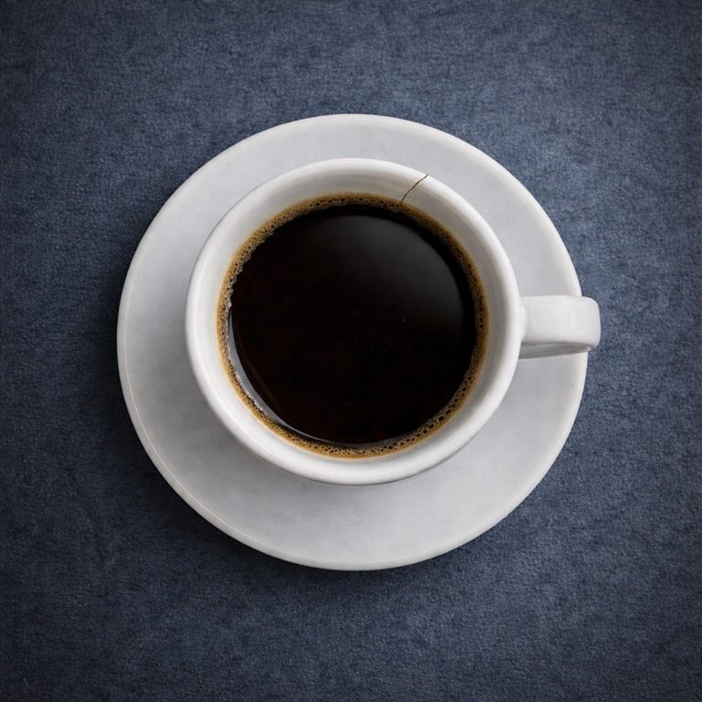

Seconda parte
Capirò il perché

Che bello, sono felice come non mi capitava ormai da tempo.
Sto preparando le polpette di patate, quelle che piacciono tanto a lui, col ripieno di salsa di fegatini di pollo, la famosa ricetta di una zia di mio nonno che si tramanda ormai da generazioni nella mia famiglia.
Non è mica facile farle! Ma a me vengono proprio bene. Sorrido… Fare cose manuali per me è piacevole; vado in automatico e la mente svolazza verso altri pensieri.
Ad esempio penso alla camicetta da notte, quella in pizzo nero trasparente, che ho acquistato ieri sera. Sì, proprio quella che avevamo visto insieme l’altro week-end mentre passeggiavamo in centro. Mi aveva detto: “certo che invece dei tuoi soliti pigiamoni di pile, un bel vestitino come quello non sarebbe male!”
…e ha ragione… io solo pigiamoni, pure con calzini perché ho sempre i piedi marmati.
Ma non stanotte! Eh… stanotte lo sorprenderò!
Eccoci qua, un ultimo ritocco… e anche le polpette sono pronte! Tavola apparecchiata, ho anche già stappato il vino rosso. A minuti arriva…
Lui non sa ancora niente, non sa che è il giorno SuperSpeciale, quello in cui ho ricevuto la conferma. Ebbene sì, ho vinto il concorso per sostituire una flautista della Orchestra Regionale Toscana che è in gravidanza. Insomma dai, eravamo più di 80 in concorso e… ho vinto io! Non vedo l’ora di dirglielo!
Ecco, la chiave gira… è lui!
Sento il sorriso congelarsi sul volto.
Lui entra e sbatte la porta con forza. Da un calcio alla poltrona e sbatacchia la 24 ore in terra. Non dice nulla, si toglie il giaccone e va a capo basso in bagno, non si gira neanche dalla mia parte.
Io zitta. Ho il cervello in pausa.
Dopo un’eternità esce dal bagno e va direttamente a sedersi al tavolo. Ancora non mi ha rivolto la parola.
La magia di poco fa è un lontano ricordo, ha la stessa espressione dell’altra volta.
Cosa sarà stato? Un paio di mesi fa, era un sabato sera, nel pub dove va spesso con la sua cover band dei Modà.
Prima che iniziassero a suonare ero salita sul palco, così, per salutarlo, per dargli il mio “in bocca al lupo!”
Il batterista se ne esce con: “Eh no, Viola sul palco proprio no! Lo sanno tutti che il viola porta scalogna!” E giù risate, tutta la band al completo ride.
Ma che cavolo di battuta sarebbe? Fa ridere?
Io comunque non dico nulla, ma almeno un’occhiataccia gliela mando prima di scendere e andare (da sola) al tavolino a sorbirmi le consuete hit dei Modà. Non lo confesserò mai, neanche sotto tortura, ma a me le canzoni dei Modà piacciono quanto una calcagnata in uno stinco.
Mentre scendo sento il “simpatico” batterista che dice: “Mamma mia com’è permalosa la tua Viola!”
Finiscono di suonare tardi, molto tardi. E poi passa molto, ma molto tempo prima di andare via, perché hanno da salutare, da commentare, da bere birre, da darsi sonore pacche sulle spalle per come è andata.
Io lì, sola al tavolino, aspetto.
Ma alla fine non mi spiace aspettare.
Lo guardo, è così bello, ha carisma, sembra una calamita, tutti (e anche tutte eh) vanno da lui. Ed io sono orgogliosa. Talmente orgogliosa che digerisco con un sorriso anche i Modà!
Poi quando siamo finalmente in macchina faccio un passo falso: invece che starmene buona, accovacciata al suo fianco, mi viene di dirgli: “certo che il batterista è proprio un simpaticone, ma che bella battuta prima!”
Lui mi guarda, la bocca sorride, ma gli occhi no. Non so neanche descrivere come sia possibile questo, ma è così.
Siamo fermi ad un semaforo; con uno scatto afferra il mio braccio mingherlino e stringe.
Stringe molto forte.
Mi dice: “Mi hai fatto fare una figuraccia coi miei amici. Sarà meglio che non succeda più. Sarà meglio che tu impari a stare al tuo posto o te lo spiego bene io qual è il tuo posto!”
Io muta.
Pochi secondi e allenta la presa, mi lascia. Scatta il verde e riparte.
Più tardi, a casa, quando mi tolgo il maglione, vedo cinque lividi sul braccio.
Adesso ha la stessa espressione. Bocca sorridente ed occhi torvi.
Il cervello prova a sbloccarsi dalla pausa che si è preso. Passa in rassegna cosa è successo recentemente. Non mi sembra di aver fatto niente di male.
Eppure qualcosa ci deve essere.
Mangia le polpette.
Provo a chiedere se sono venute bene, se gli piacciono.
Risponde a monosillabi.
E quindi adesso quale deve essere “il mio posto”? Cosa devo fare? Perché non c’è un maledetto libretto di istruzioni con su scritto “Il posto di Viola - uso e manutenzione”?
Decido di dargli comunque la notizia: “Ah… sai quel concorso per la ORT a cui ho partecipato giovedì? L’ho vinto! Ho il posto per almeno cinque mesi!”
Lui si gira lentamente verso di me, in silenzio.
Ahi… è ancora più incazzato di prima. Stringe i pugni e li riapre e poi li stringe di nuovo.
Mi dice: “Ascoltami bene. Mi hanno appena detto dal Pub che le serate, TUTTE le serate, sono cancellate. I Modà non tirano più e ci rimpiazzano. E a me girano, ma girano molto forte. E tu mi viene a sbattere in faccia il tuo stronzissimo concorso. Ti diverti eh? Ti piace sbattermi in faccia il tuo stramaledetto piffero e la sua stramaledetta lagna, eh?”
Io a occhi bassi balbetto: “scusa, non… non volevo ferirti, davvero… ma… ma come potevo sapere…”
Lui batte il pugno sul tavolo e mi dice: “Viola, chetati. Te l’ho già detto una volta. Te lo ripeto: IMPARA A STARE AL TUO POSTO!”
Io zitta.
Si alza, va sul divano e prende il giornale.
Il mio cervello è piantato nella posizione “blocco”.
Immagino che dovrei dire qualcosa, fare qualcosa, ma niente… sono mentalmente paralizzata.
Preparo il caffè e gli porto la tazzina fumante. “Amore… ecco il caffè…” gli dico.
Lui abbassa il giornale e mi guarda in silenzio.
Non dice niente, non si muove.
Mi fissa.
Che devo fare?
Dopo un po’ metto la tazzina sul tavolino, e torno indietro, mi metto sulla sedia e aspetto.
Cosa aspetto non so…
Forse qualcosa accadrà.
Adesso ascolta il brano
Capirò il perché
La canzone non è ancora disponibile. Riprova tra poco.